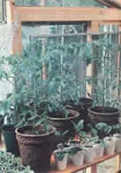
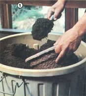
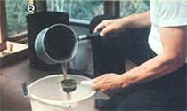
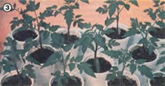
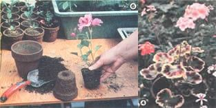

Your "under glass" growing can be twice as successful - with half the trouble - when you.. .
A lot of folks are confused by the complexities of hothouse cultivation. Well, if an unsure understanding of the many published "rules and regulations" is keeping you from trying greenhouse gardening, just forget them! All you really have to do to turn your plant palace into a dynamic package of productivity is to put real soil in the pots and benches ... give your greenery plenty of light, air, and space . . . administer water wisely . . . and feed your hungry charges with nourishing manure "tea".
Besides - by doing without the often-recommended chemical fertilizers, sterile soil mixes, sprays, fumigants, systemics, and such - you'll find that you have a good bit of spare cash left for more essential items ... such as plants and pots. You'll also discover that disease and insect infestations, weak growth, and subnormal performance are (more likely than not) merely symptoms of improper culture, which shouldn't trouble the gardener who zeroes in on the basics!
SOIL, AIR, LIGHT, AND SPACE
First of all, grow only those plants that are proven stalwarts or have been bred for vigor, productivity, and resistance to disease (in many cases you'll have to do some experimenting to find such varieties, but other greenhouse users can often give you "best bet" advice). Species that don't do well unless they're constantly fed - or plants that tend to succumb to aphids in spite of good growing conditions - should be classified as "unfit" . . . and removed from your list.
In order to provide your chosen vegetables and flowers with good soil, make up a half-and-half mixture of rich garden loam and compost . . . or one consisting of one-third each of loam, compost, and peat moss. Then, to each prepared bushel, add a six-inch potful of well-aged manure and a four-inch potful of bone meal or wood ashes. If there's clay in your loam, put some sand in the mixture, too. (Cacti like a soil composed of one part loam, one part organic compost, and two parts sand.)
Next, be sure to give your greenhouse tenants a breath of fresh air . . . often! Insect pests - as well as fungi, mildew, and diseases - just love to attack plants that suffer from a close atmosphere, so make sure that your greenhouse is well ventilated (while, of course, maintaining the desired temperature) and you'll keep trouble at bay.
Remember, too, that full sun on your hothouse means full production ... and can cut down on the need for supplemental winter heat. (The structure can always be shaded with netting, film, paint, etc. to limit sunlight ... but you can't bring sun to it once it's been situated in the shade.)
Space is equally important. Vegetation needs room to grow ... so if you notice the leaves of adjacent plants touching, it's best to move them away from each other. (Of course, folks who grow their hothouse flora only in pots will find the task easy . . . but people who plant directly in the bench will have to either thin or plan ahead.)
TEMPERATURES MADE SIMPLE
One of the main concerns of any greenhouse gardener is to avoid extremes and sudden changes of temperature in the growing area. So watch for those still, clear winter days that can make your greenhouse thermometer reading soar in minutes! On such occasions you may have to ventilate, even if the outside temperature is below freezing. Warm weather always calls for maximum ventilation, with all vents wide open ... exhaust fan on full (if your greenhouse is equipped with one) . . . and the door ajar, if necessary.
During the winter months, a minimum night temperature of 45-50°F is best, unless you're growing tropical plants. Even then, the usual 60°F minimum may not be necessary, because a gardenia, for instance, will winter perfectly well in a cool greenhouse (it will simply go dormant and wait for the return of warmer weather before blooming again). Besides, cooler temperatures favor a wide range of flowers and vegetables . . . such as lettuce, herbs, geraniums, cyclamens, and many annuals.
FOOD AND WATER
Don't let your plants go dry (unless you're growing succulents or cacti) . . . but don't try to maintain a regular watering schedule, either. The variables that affect the loss of moisture from the soil (including weather, the size of the container, the kind of plant, etc.) are just too many to cope with routinely. Instead, simply check the pots often : When the surface soil is dry to the touch, water them thoroughly. (Dormant or inactive plants, on the other hand, should be kept barely moist.) It's simple ... it's pleasant ... and your indoor crops will reward you for the individual attention by growing bigger and better!
I've found that supplemental feedings aren't necessary for any plant that's been recently potted in good soil. In already established plants, weak or slow growth that's not attributable to winter doldrums or dormancy - or a yellowing of the leaves during a period of active development - means one of two things: The roots have filled the pot and require more room, or the plant needs additional nutrients. If evidence points to the latter problem, offer the patient a "spot of tea". Here's how:
Fill a large, leakproof, rotproof pail with water, and add a generous quantity of manure. After the mix has been allowed to soak for several days, pour the liquid into your watering container through an old strainer. Dilute it - if necessary - until it's the color of weak tea, and give your plants a normal watering of this "super soup". (Be sure to periodically feed plants that like to be potbound, such as specimen jasmines or geraniums.)
If possible, it's best to give your hothouse residents "tea" on the morning of a bright day. Skip such feedings in the middle of long spells of dull or cold weather, and don't feed a dormant or ailing plant (that would be akin to asking a sick person to eat a big meal).
ATTITUDES AND INSECTS
Most of the six- and eight-legged creatures, and other so-called pests, that inhabit your greenhouse are simply living out their life cycles and aren't really all that interested in your plants. No doubt you'll spy aphids now and then, but - if you're sticking to the basic rules - you aren't likely to be faced with an aphid buildup or takeover. Should a plant suddenly become infested, just remove it to other quarters and rinse the bugs off (assuming the specimen is worth the trouble). Keep it isolated and watch it carefully.
If the problem returns, get rid of the plant . . . because you can be sure there's something wrong with it. (But don't discard it, or any diseased greenery, right outside the door. In fact, it's a good idea to eliminate weeds-both inside and outside the structure-so wind and people won't be so likely to bring problems in with them.)
White flies, I've discovered, detest an organically managed greenhouse. Slugs, too, seek plants that are feeble from want of good growing conditions. (The latter pests' territory is usually confined to the dingy areas under the benches. Search such hiding spots and destroy the "enemy" wherever you find it.) Earwigs may be trapped underneath several strategically placed rags, where you'll find the little pests hiding during the day and can drown them.
Tiny creatures that hop when disturbed are harmless springtails. If you have an infestation of thrips, spider mites, or sow bugs, chances are you haven't been heeding the rules. And if you don't bring mealybugs and scales into the greenhouse, you won't have any of them! So when you buy woody plants (especially gardenias), make absolutely certain they're clean.
Don't, however, expect that your greenhouse will be 100% pest-free! It's not a sterile habitat, and it would be both unreasonable and unnatural to strive toward such a goal. If your plants are free from the handicaps of poor culture, pests will automatically fall under control, and your efforts will be reduced to maintaining a watchful eye ... a vigilant hand-picking schedule ... and - otherwise - a general attitude of loving laissez faire.
SUMMER CLEANOUTS
When summer comes, it's a good practice to empty the greenhouse, so that - in the process of the enclosure's complete evacuation and drying out - any lingering insects will leave. This cleaning will provide you with a fresh start come fall (you should, of course, double-check everything you bring back in). Also, with the building empty you have an excellent place to dry herbs: Choose a sunny day . . . spread your plants out on clean sheets or towels . . . and see how fast they're ready for storage!
And . . . that's really all there is to the "science" of hothouse horticulture. When you rely on nature, you'll have healthy, eager plants that are not easily fazed by changes in growing conditions. They'll have more normal development of roots, stems, and leaves. . . better fruiting and maturation. . . and stronger flavors and colors. And one of the joys of such greenhouse productivity is the fact that there's nothing tricky about it at all!
EDITOR'S NOTE: If this article has given you a craving for a sun-powered growing room of your own, you might be interested to know that MOTHER has a set of detailed, step-by-step plans - describing how to build an attractive and practical 80-square-foot greenhouse for a cost of about $140 - that you can order for $10 postpaid from Mother's Plans, Backyard Greenhouse, P.O. Box A, East Flat Rock, North Carolina 28726.
|
 Start your tomatoes when you're ready ... not when the weather is. |
 Basic greenhouse plant care begins with good soil |
 Liquid manure is any greenery's cup of tea. |
|
 Your specimens need adequate growing space. |
 (left) A plant that demands too-frequent watering and feeding may need repotting, so both of you can relax. (right) Many flora ? like this ""smiling"" geranium ? prefer a cool greenhouse. |
If aphids concentrate on one specimen, throw out the weakling. |